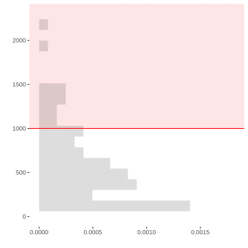

| side ($j$) | value ($y_j$) | |
|---|---|---|
| 1 | 1 | 1 |
| 2 | 2 | 2 |
| 3 | 3 | 3 |
| 4 | 4 | 4 |
| 5 | 5 | 5 |
| 6 | 6 | 6 |
6 Homework: The Idea of Calibration
Download this assignment — unzip it, open homework-calibration.qmd in Positron, and answer inside the answer blocks.
This homework is about calibrating interval estimates. We will cheat by working with populations we know. That lets us build the sampling distribution, choose an interval width, and check how often the resulting intervals cover the truth.
We start with a die, where we can do every calculation by hand. Then we use the same procedure on NBA data.
A Die
Roll a six-sided die. If you don’t have one, ask me and I’ll give you one.
A population of six sides
Think of the sides of the die as a population. Write \(j=1,\ldots,6\) for a side’s position and \(y_j\) for the value written on it. For this die, \(y_j=j\).
The first roll, \(J_1\), chooses a member of that population, every one equally likely. The value we observe is \(Y_1=y_{J_1}\).
| probability | value of \(Y_1\) |
|---|---|
| 1/6 | 1 |
| 1/6 | 2 |
| 1/6 | 3 |
| 1/6 | 4 |
| 1/6 | 5 |
| 1/6 | 6 |
This table is the distribution of \(Y_1\).
Suppose we want to know the probability that a roll is 3 or more. Nobody looks this up in a book. They count. Four of the six outcomes are 3 or more, so the probability is 4/6.
The probability it doesn’t happen—the complementary probability—is 2/6.
| probability | value |
|---|---|
| 2/6 | 0 |
| 4/6 | 1 |
This is the distribution of the indicator \(1_{\ge 3}(Y_1)\), which is defined like this:
\[ 1_{\ge 3}(y) = \begin{cases} 1 & \text{ if } y \ge 3 \\ 0 & \text{ otherwise.} \end{cases} \]
Counting worked because two different faces cannot come up on the same roll. The probability of getting one face or another is therefore the sum of their probabilities. That is disjoint additivity of probabilities. We’ll talk about this later in the semester when we get more formal about probability.
Marginalization
We just worked this out by counting. Now we’re going to formalize that idea in a way that generalizes pretty well.
Instead of going directly from the probability distribution of one thing to the probability distribution of another, we talk about the probability distribution of both things together — the probability distribution of the pair.
For a six-valued die and a two-valued indicator, there are \(6 \times 2 = 12\) possible pairs. Thankfully, this is an easy case. Our indicator \(1_{\ge 3}(Y_1)\) is a function of the die value \(Y_1\). Whenever we know the value of \(Y_1\), we also know the value of \(1_{\ge 3}(Y_1)\). If we wanted to put the other six pairs into our table, we could, but we know that they don’t happen. Their probability is zero. So practically speaking, we can add a function to our probability table for free. We just add a column with the function’s value for each die value.
| probability | \(Y_1\) | \(1_{\ge 3}(Y_1)\) |
|---|---|---|
| 1/6 | 1 | 0 |
| 1/6 | 2 | 0 |
| 1/6 | 3 | 1 |
| 1/6 | 4 | 1 |
| 1/6 | 5 | 1 |
| 1/6 | 6 | 1 |
Then we get the distribution of the indicator by summing the probabilities of the rows with the same value in the indicator column. This is called marginalization.
Estimation
We ask a question about the six sides of the die: what fraction are 3 or more? That is, if we call the sides \(y_1,\ldots,y_6\), we want this:
\[ \underset{\text{estimand}}{\theta} = \frac{1}{6}\sum_{j=1}^6 1_{\ge 3}(y_j) = \frac{4}{6}. \]
We’re going to estimate it by rolling \(n\) times and calling the values \(Y_1,\ldots,Y_n\). This is a sample drawn with replacement: the same value can appear twice because the die does not know what it did last time. The fraction of rolls that are 3 or more is our estimate:
\[ \underset{\text{estimate}}{\hat\theta_n} = \frac{1}{n}\sum_{i=1}^n 1_{\ge 3}(Y_i). \]
Here we’re following a convention in which we write our targets as some greek letter. Often \(\theta\). And add a ‘hat’, the thing above the letter theta in \(\hat\theta\), to indicate an estimator of that thing.
When we repeat the sample, \(\hat\theta_n\) changes. Its sampling distribution lists the values it can take and how often each one occurs. We can work it out exactly here because the population is small enough to count.
Sample Size One
Sample Size Two
This function does what you just did by hand. It calculates every draw’s distance from the centre, puts those distances in order, and takes the first one that reaches the target coverage. Then it doubles that distance to turn a half-width into a width.
width = function(draws, center = mean(draws), alpha = .05) {
2 * quantile(abs(draws - center), 1 - alpha, type = 1)
}Simulating
Counting worked because there were 36 pairs. At \(n=3\) there are 216, at \(n=5\) there are 7776, and the assignment is not going to ask you to count those.
We are not going to ask you to do these larger calculations by hand. The code does the same things you just did: build the sampling distribution, then count outward from its centre until the interval reaches its target coverage.
NBA Data
A population of six players
Now do the same thing with a different population. Here are the Atlanta Hawks’ starters and their sixth man, along with the points each scored over the 2023 season.
| roll ($j$) | player | points ($y_j$) | |
|---|---|---|---|
| 1 | 1 | Dejounte Murray | 1515 |
| 2 | 2 | Trae Young | 1914 |
| 3 | 3 | John Collins | 931 |
| 4 | 4 | Saddiq Bey | 1062 |
| 5 | 5 | De'Andre Hunter | 1029 |
| 6 | 6 | Onyeka Okongwu | 791 |
Rolling the die chooses one player, every one equally likely. Now \(Y_1\) is the chosen player’s point total.
You have now repeated the hand calculation with the Hawks’ six. Now repeat the code check using the estimator you defined for the die. The sampling, replication, plot, interval width, and coverage calculation are supplied.
Two Samples
A mutual friends gives us some data describing the performance of NBA players in the 2023 season. Actually, they give us different data—they give me ‘sample 1’ and you ‘sample 2’. They say these are samples of size 100 drawn with replacement from the population of all players that played in the league that year.
my.sample = read.csv("https://qtm285-1.github.io/assets/data/nba_sample_1.csv")
your.sample = read.csv("https://qtm285-1.github.io/assets/data/nba_sample_2.csv")Theres a fair amount of information about the players in our samples. Here’s a list of the variables we have.
- Player - The player’s name.
- Team: The team whose this player is playing for this season in abbreviated term.
- Age: The Age of the player.
- GP: The number of games that the player has played in this season.
- W: The number of games won in which the player has played.
- L: The numer of games lost in which the player has played.
- Min: The minutes the player has played for this season.
- PTS: The number of points made by the player.
I’ll work through my sample first. Then you’ll repeat the same analysis with yours.
An Estimation Problem
We ask the same question we asked about the Hawks’ six, on the whole league: what fraction of players scored at least 1000 points?
My estimate, for what it’s worth, is 0.13.
Y = my.sample$PTS
n = length(Y)
theta.hat = mean(Y >= 1000)
theta.hat[1] 0.13To put it in context, I plot my points around the thousand-point line.
library(ggplot2)
scale_y = scale_y_continuous(breaks=seq(0,2000,by=500), limits=c(0,2300))
scale_x = scale_x_continuous(breaks=seq(0,2000,by=500), limits=c(0,2300))
no_labs = labs(x='', y='')
points.plot = ggplot(data.frame(i = 1:n, y = Y)) +
annotate("rect", xmin = -Inf, xmax = Inf, ymin = 1000, ymax = Inf,
alpha = .1, fill = "red") +
geom_point(aes(x = i, y = y), alpha = .4) +
geom_hline(aes(yintercept = 1000), color = "red") +
scale_y + no_labs
points.histogram = ggplot(data.frame(y = Y)) +
annotate("rect", xmin = 1000, xmax = Inf, ymin = -Inf, ymax = Inf,
alpha = .1, fill = "red") +
geom_histogram(aes(x = Y, y = after_stat(density)), bins = 20, alpha = .2) +
geom_vline(aes(xintercept = 1000), color = "red") +
scale_x + no_labs
points.plot
Here the x-coordinate is irrelevant. I’ve plotted pairs \((i,Y_i)\) where \(i=1 \ldots n\) counts out the observations in our sample and \(Y_i\) is the number of points the \(i\)th player in my sample scored. The red horizontal line is the thousand-point mark, so my estimate \(\hat\theta\) is the fraction of the dots sitting above it.
To make it a little easier to see the distribution of season point totals in my sample, I plot a histogram and annotate it with the same line—still red, but now vertical to fit into the layout of the histogram. The shaded region is where the indicator equals 1. The area of the histogram bars inside that region approximates \(\hat\theta\); when a bin crosses the thousand-point line, the histogram has grouped together points on both sides.
points.histogram = ggplot(data.frame(y = Y)) +
annotate("rect", xmin = 1000, xmax = Inf, ymin = -Inf, ymax = Inf,
alpha = .1, fill = "red") +
geom_histogram(aes(x = Y, y=after_stat(density)), bins=20, alpha = .2) +
geom_vline(aes(xintercept = 1000), color = "red") +
scale_x + no_labs
points.histogram
To make these fit together nicely, I rotate my histogram and lay my two plots out side by side so that the bins of the histogram align with the individual players’ points.1
points.histogram + coord_flip()
points.plot + theme(axis.text.y = element_blank())- 1
-
This
coord_flip()call rotates the histogram plot so the bins are horizontal. - 2
-
The
theme(...)call turns off the vertical ‘tick labels’ 0, 500, … in the plot on the right. They’re redundant because our grids are aligned and we’ve already got the on the left.


My estimate and yours are fairly different, even though our friend says both samples came from the same population. That difference could just be sampling variation. To find out, we ask our friend for the data on every player in the league.
Knowing the whole population lets us simulate what estimates from samples of 100 usually look like. Then we can see whether your estimate is a plausible result of sampling from this population.
our.pop = read.csv("https://qtm285-1.github.io/assets/data/nba_population.csv") Two Populations
You have now calculated the fraction of players scoring at least 1,000 points in the league and among the Hawks’ six players.
One thing to know while you look at them: the Hawks finished that season 41-41.
When you do this, it’s important to make sure the grid lines in your two plots line up. To do that, be sure to set the same limits on the x-axis in both plots and make sure axis labels aren’t shifting things up or down. You can do the former by setting
breaksandlimitsinscale_*_continuousand the latter by sayinglabs(x='', y='')to turn axis-labels off.↩︎